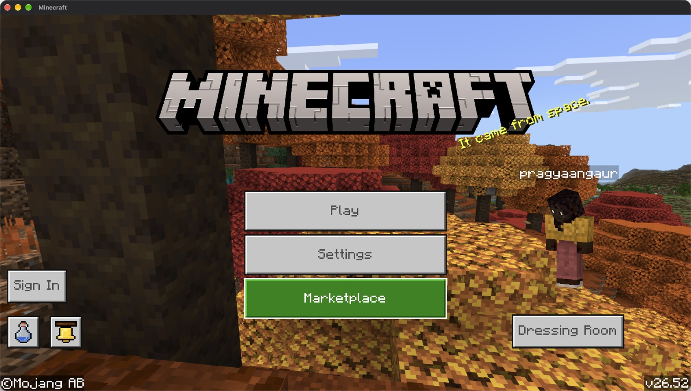
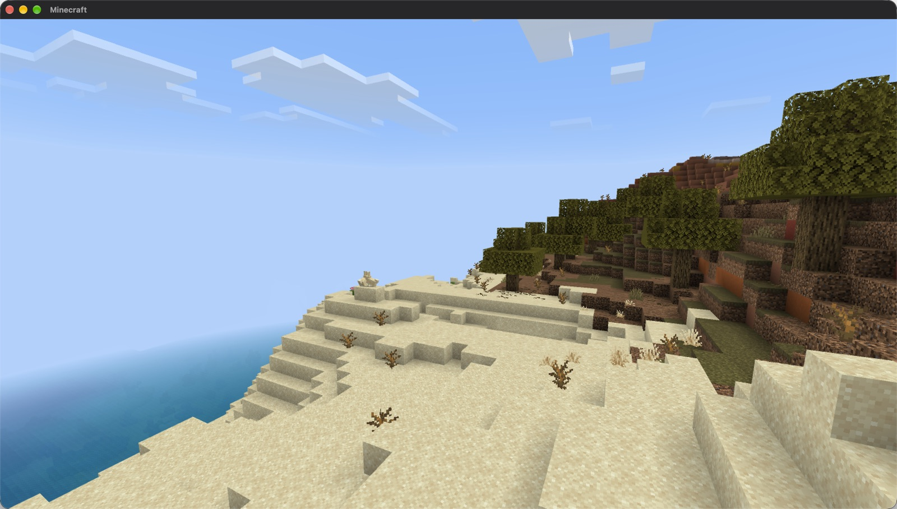
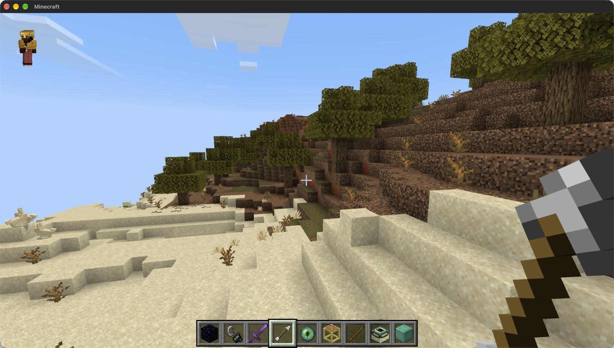
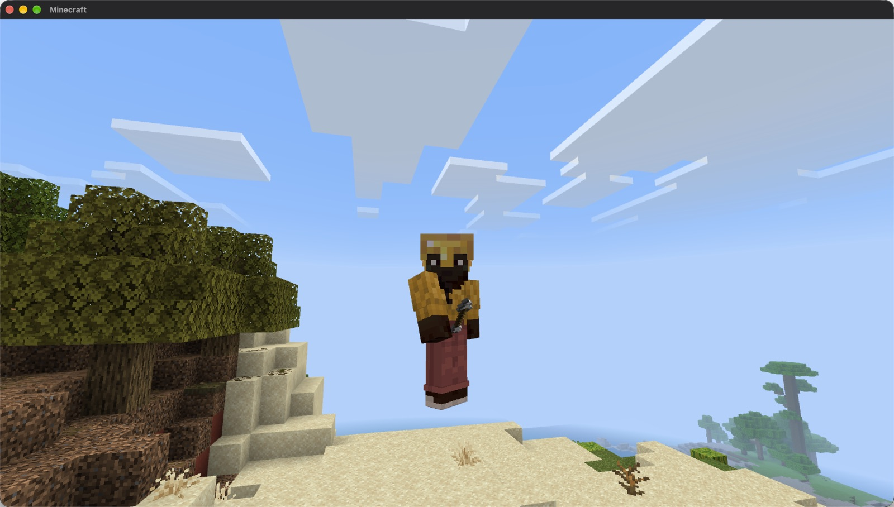
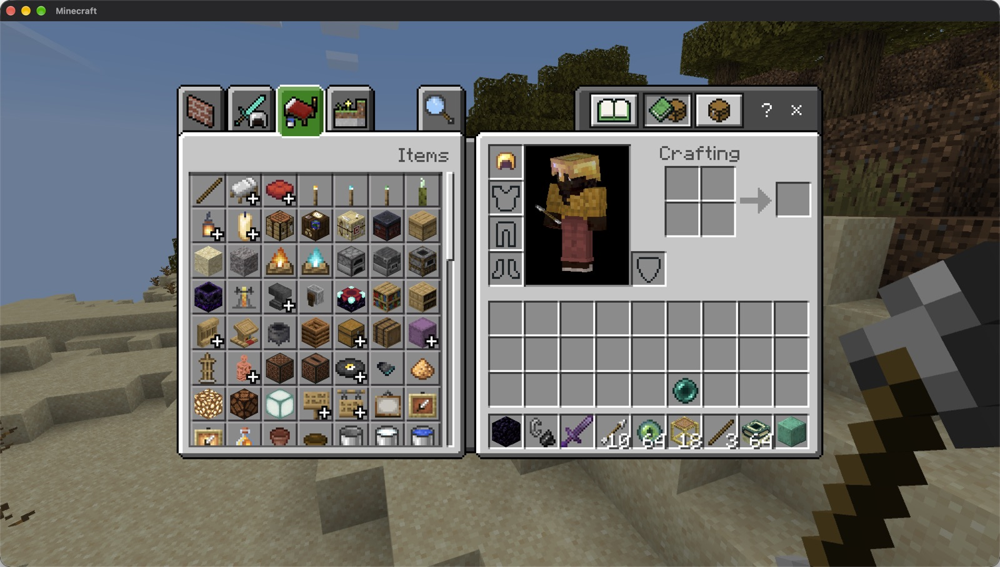
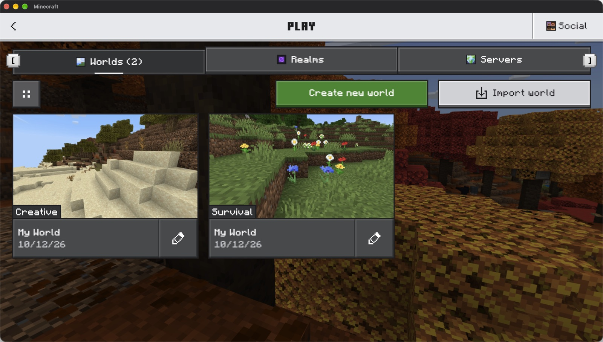
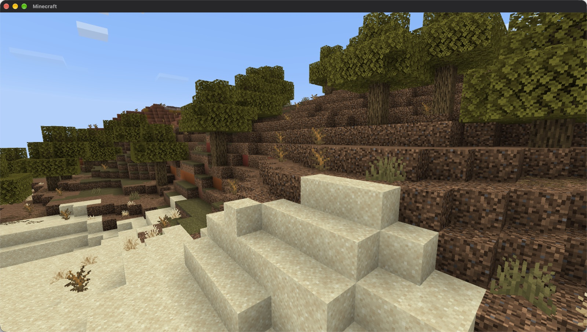
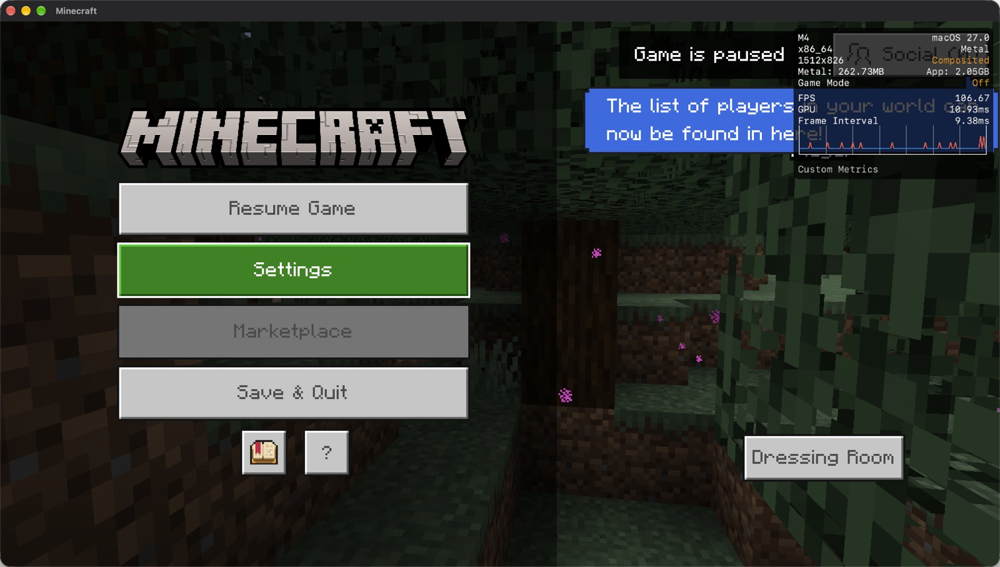

For Macs with Apple silicon
Minecraft Bedrock Edition, running on your Mac.
Mojang only makes Bedrock for Windows, phones and consoles. Bedrock Launcher takes the copy of the game you own on a Windows PC and runs it on a Mac with an M1 or later chip. Your worlds, survival, creative, the Nether and the End all work, at around 100 frames per second.
You need your own copy of Minecraft for Windows. The download contains no game files.

The real game
This is the actual Windows build of Bedrock, not a remake or a mod. Worlds are saved in the same format as on Windows.
Smooth on Apple silicon
A Mac with an M4 chip runs it at about 100 frames per second with a 12 chunk render distance. Graphics go through Apple's Metal.
Fully offline
Nothing signs in and nothing is sent anywhere. Single player works completely. Realms, servers and the Marketplace do not.
Screenshots
All of these were taken on a Mac with an M4 chip.







How to install
-
Download and copy the app
Open
Bedrock-Launcher.dmgand drag Bedrock Launcher into your Applications folder. -
Allow it to open
The app is not signed by Apple, so macOS blocks it the first time. Open it once, then go to System Settings, Privacy & Security, scroll down and click Open Anyway. You only need to do this once.
-
Bring your game from Windows
Copy the game folder and a memory dump of the running game from your Windows PC. The steps are below, and they take about 15 minutes.
-
Open the app and play
Bedrock Launcher asks for the folder, the dump and a player name. It prepares the game in about five minutes and starts it. After that, opening the app starts the game straight away.
If Rosetta 2 is not installed yet, the app offers to install it. It is Apple's translator for Intel programs, and the Windows parts of the game need it.
Getting the game files from Windows
On Windows the game's main program is encrypted on disk and only decrypted while it runs. That is why the app needs a memory dump of the running game as well as the game folder. You need a Windows PC on which you own and have installed Minecraft for Windows, version 1.26.52.
1. Take the memory dump
Install System Informer and start it as administrator. Start Minecraft and wait for the title screen without signing in. In System Informer, right-click Minecraft.Windows.exe and choose Create dump file. The file is about 3 GB.
2. Copy the game folder
Right-click Minecraft.Windows.exe again and choose Open file location. Copy that whole folder, about 2 GB. Windows will not copy Minecraft.Windows.exe itself, and you can skip it.
3. Move both to the Mac
A USB drive formatted as exFAT works well, because the dump is too big for FAT32. Put both anywhere on the Mac and choose them when the app asks.
Keep the dump private. If you signed in before taking it, it can contain your sign-in tokens. Once the app has prepared the game you can delete both copies.
Questions
Do I need to own Minecraft?
Yes. The app contains no game files at all. It runs the copy you bought for Windows, which you copy over yourself.
Does it work on an Intel Mac?
No. It needs a Mac with Apple silicon, which means an M1 chip or anything newer.
Can I play online, on Realms or on servers?
No. The game runs fully offline and nothing signs in to a Microsoft account. Single player worlds work completely, including the Nether, the End and the Ender Dragon.
Can I move my worlds between the Mac and Windows?
Yes. Worlds are stored in ~/Library/Application Support/Bedrock Launcher/prefix/drive_c/users/<you>/AppData/Roaming/Minecraft Bedrock/Users/Shared/games/com.mojang/minecraftWorlds, in the same format as on Windows.
The game paused when I clicked another window.
The Windows version does the same. Click Resume Game to carry on.
How does it work?
It runs the Windows game on Wine with the Xbox GDK runtime from WineGDK, and DXMT turns its Direct3D 11 graphics into Metal. The executable is rebuilt from the memory dump, and a few dozen fixes were needed along the way. The full story is on GitHub.
Is this made by Mojang or Microsoft?
No. It is an independent project and is not affiliated with Mojang or Microsoft. Minecraft is a trademark of Mojang Synergies AB.